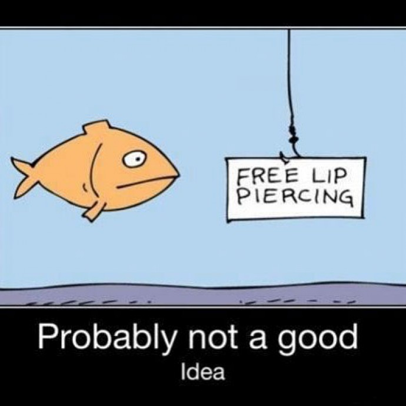

Local Fishing Holes Where to catch the Big One in Missouri! Misouri Catfish Hotspots Missouri Trout Fishing Bass Fishing in Missouri
Live Bait Shops  Best bait and tackle shops in Missouri! Best Bait Shops State-wide T.Hargrove Fly Fishing Inc. in St. Louis Fitz Fishing in Lake of the Ozarks
Living Legends Some of the tallest fishing tales in Missouri! Catfish Catches Unbelievable Missouri's Monster Fish